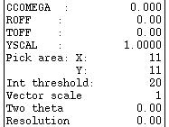

See also the accompanying document giving background information.
In the following instructions, when you need to type something, or click on something, it will be shown in red. Output from the programs or text from the interface is given in green.
Files in directory DATA:
| runit | file with starting parameters for MOSFLM |
| process.sav | input command file for CCP4i processing job: integrating all images |
| process.mat | MOSFLM Matrix file needed for CCP4i processing job |
| hg_a_1to84_h3.mtz | reflection file produced by MOSFLM for data reduction with SCALA |
| hg_a_1to84_h3_scala2.mtz | reflection file from MOSFLM/SCALA, rogue image excluded |
| gere_nat.sca | SCALEPACK output reflection file |
| gere_hrm.mtz | reflection file from data collection at high-energy remote wavelength |
| gere_infl.mtz | reflection file from data collection at inflection point wavelength |
| gere_safepeak.mtz | reflection file from data collection at high-energy side of peak wavelength |
| gere_peak.mtz | reflection file from data collection at peak wavelength |
Files in directory RESULTS:
| SUMMARY | MOSFLM SUMMARY from CCP4i processing job |
| scala-all-h3.log | .log of scaling all batches from MOSFLM |
| anomalouspatterson-h3.log | .log of anomalous Patterson map calculations in spacegroup H3 |
| reindex-h3-to-h32.log | .log of reindexing from spacegroup H3 to H32 |
| anomalouspatterson-h32.log | .log of anomalous Patterson map calculations in spacegroup H32 |
| inmport-scaled.log | .log of importing a scaled reflection file from SCALEPACK |
| inmport-scaled.def | CCP4i .def of importing a scaled reflection file from SCALEPACK |
MOSFLM can process diffraction images from a wide range of detectors and produces, as output, an MTZ file of reflection indices with their intensities and standard deviations. This MTZ file is passed onto other programs of the CCP4 program suite for data reduction, scaling and merging.
After setting up to run Mosflm, and an introduction to the Mosflm GUI, in the normal course of things, a data processing protocol with MOSFLM would be:
Experience has shown, that most people benefit from being familiar with the program before learning about the STRATEGY option, which therefore in this tutorial features only after integration. The tutorial also covers the effects of changing integration parameters, locating outliers and restarting an interactive Mosflm process.
MOSFLM can process diffraction images from a wide range of detectors and produces, as output, an MTZ file of reflection indices with their intensities and standard deviations. This MTZ file is passed onto other programs of the CCP4 program suite for data reduction scaling and merging.
Your task is to process 84 images, hg_001.mar1600 to hg_084.mar1600, collected in Hamburg on BW7A beamline with a mar345 image plate detector. These are crystals of a small domain (91 amino acids) that have been soaked in a mercury compound.
Logon to your terminal
Create a subdirectory for Mosflm files:
Create a subdirectory for the tutorial images:
N.B. This could be a temporary or scratch area.
Go to the images directory:
N.B. If you want to process your own data, ignore this step and the next.
Take the tutorial images from the testdata directory at www.autostruct.org:
Alternatively, get the images directly from http://www.autostruct.org/testdata/index.html - half-way down the page you will find the HypF domain and hg_images.tar.
Go to the mosflm directory:
Get a startup file:
The input file runit contains the minimum information required to start analysing the data:
detector mar ! detector type directory $HOME/TEST/mosflm/images/ ! directory on which the images are stored (edit this) image hg_001.mar1600 ! name of an image go
[NOTE that the program will pick up distance, wavelength and phi values from the image header for most types of detector. However, this depends on the software being correctly installed at the beamline, and the necessary communication between the program controlling data collection and the MAR software, and this is not always reliable.]
Now you are ready to run MOSFLM.
The image will be displayed in the GUI.
Various processing parameters can be entered in the "Processing params" panel on the left.
| Crystal parameters are at the top of the list, | |
| followed by the beam parameters, | |
|  | and finally the detector parameters. |
| Below this are parameters that control the spot search, used to locate spots for autoindexing, | |
| and finally a single parameter that controls spot selection for autoindexing. | |
| To enter a new value for any of these, just click on the appropriate parameter, enter the value and hit Enter. |
There are four "toggles" below this:
| "Prompts" controls the amount of text written to the output window during operations like spot finding. | |
| "Update display" refreshes the spot prediction at different points in the integration. | |
| "Timeout mode" saves you having to keep hitting the "Continue" menu item when integrating a lot of images. |
The "Main menu" next to the Processing params panel.
| The program options can be selected from the "Main menu". |
The "Output" panel underneath the Main menu.
| The "Output" panel displays information on mouse position (click left mouse button) or on particular reflections if a predicted pattern is displayed (click left mouse on prediction box.) |
Within the image display section, there is a small "blow-up" window in the top left corner (approximately 20mm square).
When the mouse is in the image display, clicking middle mouse button will improve the resolution of this window, but it can no longer be moved.
The Zoom button can be used to blow up part of the image.
To get back to the full image, click on Zoom twice.
N.B. The Zoom feature has been disabled on some SGIs because it can cause the terminal to freeze.
Change the Max value in the image display window to 600 and zoom an outer part of the image to get a better idea of the quality of the image.
Click on Circles (in the Main menu) to display resolution circles. The resolution of the circles is given in the Output panel.
N.B. Never close a MOSFLM "input" window (the ones headed "xdl_io_window") by clicking the symbol in the very top left corner of the display box and selecting "Close", as this will cause the program to crash! The window will be closed automatically when the task has been finished. The shape of the symbol depends on the terminal program you are running - it could be a rectangle (seen on Unix), a letter (seen on Linux), or a Windows symbol.
The success of autoindexing is critically dependent on the accuracy of the direct beam coordinates. The required accuracy will depend on the spot spacing (to avoid mis-indexing), but in general you should know the direct beam position to within 0.5mm (or better for very close spots).
The best way to locate the direct beam position is to look at a powder diffraction ring e.g. take a shot with just water in the loop to give an ice ring.
These images have two very faint ice rings at 3.91 and 3.67Å.
N.B. This option (Beam/backstop) has two functions. It is EITHER used to define the main beam position by fitting a circle to points on a diffraction powder ring (e.g. wax or ice), OR it is used to define a circular backstop shadow. In this example it is being used to define the direct beam position.
From the Main menu
A small window will appear, headed xdl_io_window, with some instructions.
The program will find the best circle that fits the selected points, and this will be displayed.
Read what is in the small window because you have the option of changing both the beam position and the position and size of the backstop; you only want to do the former in this case!
If you want to remove the circle, select Circles and then Erase circles from the main menu.
Auto-indexing works well with either single or multiple images, and with 100 - 750 spots: it is particularly good if your cell is very anisotropic or if you have strong diffraction.
From the Main menu
It may/will complain that the direct beam position has not been specified (default is the centre of the image).
If it does, just ignore the complaint, click Enter to continue, and
Then, and also if the direct beam position was already OK
Note that only the spots to be used in autoindexing (above the I/sig(I) cutoff) are displayed.
N.B. For these data, the true direct beam position is within 0.5mm of the centre of the image. If it were much further away, autoindexing would not work.
Look at the 'PENALTY' in the output list ('Input reply'), and choose the autoindexing solution with the highest symmetry but a low PENALTY. A clue here is a large and sudden increase in the PENALTY between possible solutions. Look for a gap of around 50-100 (e.g. if PENALTY of solution 6 is 10 and of solution 7 is 65 then choose solution 6).
There are a few other considerations to take into account when choosing the solution:
NOTE that the true space group symmetry can only be established once data have been integrated. It is best to be conservative and use the lower symmetry, i.e. H3 in this case. After integration, you can use REINDEX to check different space groups with SCALA without having to re-integrate them with MOSFLM (or use 'Sort/Reindex MTZ Files' in CCP4i). Choosing H3 and not H32 will not affect the integration at all, but it WILL affect the Strategy calculation.
The cell parameters derived from the autoindexing will now be refined using the observed spot positions (note that the a and b cell parameters are not equal in the initial cell).
The program first asks if you want to change the cutoff for rejecting individual reflections from the refinement:
Normally this does not need to be changed,
The cell parameters will be refined imposing the constraints for that spacegroup (e.g. a=b, alpha=beta=90, gamma=120 for trigonal/hexagonal).
The final sd in spot positions should be one pixel or less. If it is more than two pixels, the autoindexing may have failed (if you do not know the pixel size, look in the "mosflm.lp" file that records the output from the program).
You will then be given the option to update the cell parameters:
Then the refined direct beam coordinates will be given, with the option of accepting them. In this case, the default is to accept the refined direct beam UNLESS it has moved MORE than 0.4*minimum spot separation, in which case there is NO default, you MUST enter either Y or N.
In such cases you should check that you supplied the correct beam coordinates, to avoid the risk of mis-indexing the image.
(*** NOTE *** A bug in the current code will give this warning even if the direct beam position was worked out from the ice ring)
The shift, though rather large, is still an acceptable amount, so
Finally you are given the option of selecting the solution (default yes). If you want to try another solution from the list, reply N and you will be prompted to select a new solution. Sometimes it is possible to distinguish between similar solutions (e.g. an orthorhombic space group and a monoclinic space group with a beta close to 90 degrees) by comparing the final sd in spot positions for the two solutions.
Using a second image in autoindexing
If you need another image (preferably at a very different phi value) to get the autoindexing to work, click on Read image to get the new one, and then on Find spots, and then Autoindexing. By default all found spots (from all images) will be used in autoindexing, but any combination of images can be selected using Select images. Many images can be used in the autoindexing (although there is a limit of 2000 spots).
For orthorhombic or lower symmetries, the use of two (or more) images will give better estimates of the cell parameters, and this is recommended.
Try reading in another image, run Find spots and Autoindex again. See how much the cell parameters change. Note that when you run the autoindexing the second time, by default it will use the symmetry you chose (H3) when you first ran the autoindexing. If you want the complete list of possibilities again, give the reply N to the following question (the second question that is asked when running the autoindexing):
Spacegroup "0" is interpreted as not knowing the spacegroup.
Look at the final sd in spot positions. It is not unusual for this to be higher for two images than for a single image, because the crystal orientation may have changed between collecting the two images.
Checking the results
Click on Clear spots and hit Enter to remove the crosses from the image.
Click on Predict.
The image will be displayed with the predicted pattern overlaid as rectangular boxes with the following colour codes:
| Blue | Fully recorded reflection |
| Yellow | Partially recorded reflection |
| Red | Spatially overlapped reflection; these will NOT be integrated |
| Green | Reflection width too large (more than 5 degrees in phi, default can be reset with keyword MAXWIDTH); not integrated. |
There will probably be some diffraction spots which are not covered by a prediction box; this means that with the current mosaic spread, these spots would not be predicted. Using a higher value for the mosaic spread will result in more boxes being overlaid, and some of the blue boxes will change to yellow. It is also likely that the number of overlapped reflections will increase, as will the number of reflections with green prediction boxes.
Those reflections which appear on the image near the rotation axis cannot be measured accurately by any method (the student is encouraged to become familiar with the Ewald Sphere construction which explains why this is so). This region of the detector is therefore called the "blind region"; because of its appearance in the image, it often also called the "bow-tie", "apple-core" or "cusp" region. Blind region reflections have green prediction boxes.
Click (left mouse) on any reflection. Its indices, phi value and phi width will be displayed in the Output window of the GUI.
Look at the predictions of the reflections on the image. They should agree with the positions of the measured reflections. If not, then the autoindexing has failed (check the direct beam coordinates, wavelength, detector distance).
Effect of inaccurate direct beam coordinates
See how sensitive the autoindexing is to the main beam values. Try changing them by 1-2mm. The direct beam coordinates can be input in the Processing params panel (Beam X and Y). To revert, use the Beam/backstop option and repeat the autoindexing as above, before going on to the next stage.
The program can provide an initial estimate of the mosaic spread.
From the Main menu
Check that this value is reasonable (i.e. predicts all observed spots, but does not over-predict, remembering that some spots can be missing because they are weak!).
Try varying the mosaic spread (Processing params panel) and see the effect on the predicted pattern (select Predict from the main menu after any change in mosaic spread).
If the mosaic spread is very high (1 degree or more) a significant number of
reflections will be flagged as "too wide in phi" (green boxes). The maximum
reflection width can be changed as follows:
from the Main menu
In the Input reply window
This changes the maximum reflection width to 10 degrees.
It is possible to save the current values of the detector, beam and crystal parameters to a file, which can be executed (by typing @filename) to restore these values if something goes badly wrong or if the program crashes (should never happen of course!).
From the Main menu
If you do exit, follow the instructions at the end of this section on how to restart from saved parameters. The program writes a file of MOSFLM commands which can be used as input. In this case, it will be written to the file hg_001.sav and should look like:
! This input created from an interactive session DETECTOR mar BEAM 119.56 120.08 GAIN 1.00 ADCOFFSET 8 DISTANCE 250.000 DISTORTION YSCALE 1.0000 ROFF 0.00 TOFF 0.00 TILT 0 TWIST 0 MATRIX hg_001.mat !This matrix was obtained from autoindexing ! The following images were used: 1 84 SYMMETRY 146 MOSAIC 0.69 IDENT hg DIRECTORY images/ EXTENSION mar1600 RASTER 19 19 11 6 6 SEPARATION 1.20 1.20 OVERLOAD CUTOFF 150000 PROFILE TOLERANCE 0.020 0.030
It is important not to try to integrate data that are behind the backstop shadow!
There are two different ways to give the program the position and size of the backstop.
The easiest way:
A small window will appear, with some instructions.
The program will find the best circle that fits the selected points, and this will be displayed.
Read what is in the small window because you have the option of changing both the beam position and the position and size of the backstop; you only want to do the latter!
The alternative:
Find out the centre and extent of the backstop shadow using the left mouse button and looking at XC and YC in the Output panel. Make a note of these values, then mask out the backstop shadow by clicking on Keyword input and typing in backstop centre X Y radius Z (X, Y and Z are in mm) and then run to get back to screen control. The masked area will come up as a red circle.
NOTE: It is assumed that the backstop shadow is circular. Irregular backstops can be dealt with using the NULLPIX keyword, providing all pixels in the shadow have pixel values less than any "active" part of the detector. Giving the keyword NULLPIX 100 will mean that any predicted reflection that has a pixel within its measurement box with a value less than 100 will be rejected during integration.
It is essential that the spot prediction is OK before trying to refine the cell.
If you are going to use more than one segment, ensure that the prediction is also OK for the first image of the other segments. If it is not (because the crystal has moved) then get a new orientation matrix for each segment, using ONLY spots from that image (Select images). These matrices will be written to different files. When setting up the cell refinement, when asked "Use the current orientation" reply "no" and then supply the name of the appropriate matrix file.
Before starting the cell refinement, read in image 1 (if it is not already displayed), select Predict and make sure that the spot positions are correctly predicted. If not, check the values for the following parameters in the Processing Parameters window and reset them if necessary:
PsiX, PsiY, PsiZ should all be 0.0
Distance should be 250.
Beam X, Y should be (about)119.6 120.0
CCOMEGA, ROFF, TOFF should be 0.0
YSCAL should be 1.0
Try predicting again. If the fit is still not good, repeat the autoindexing.
Select Refine cell (Main menu) and use one segment of 2 or 3 images (for orthorhombic or lower symmetries you should use 2 or 3 segments with images widely separated in phi).
Click on Continue (adapted Main menu), until you get back to the starting menu (or else click the "Timeout mode" toggle in the Processing params panel).
The program will now integrate these images, and use the resulting intensities to refine the cell parameters, crystal orientation and mosaic spread using the post-refinement procedure.
As the images are integrated, a new window will pop up showing the average spot shape for spots near the centre of the detector, and giving the rms residual (the positional error in predicting the spot positions) and the weighted residual. Example of this window:
Central profile:hg_003.mar1600 -0-0-0-0-0-0-0-0-0-0-0-0-0-0-0-0-0-0-0 -0-0-0-0-0-0-0-0-0-0-0-0-0-0-0-0-0-0-0 -0-0-0-0-0-0-0-0-0-0-0-0-0-0-0-0-0-0-0 -0-0-0-0-0-0-0-0-0-0*0-0-0-0-0-0-0-0-0 -0-0-0-0-0-0-0*0*0*1*0*0-0-0-0-0-0-0-0 -0-0-0-0-0-0*0*1*1*1*1*1*0*0-0-0-0-0-0 -0-0-0-0*0*0*1*2 3 4 3*2*1*0-0-0-0-0-0 -0-0-0-0*0*1*2 5 9 B 8 4*1*0-0-0-0-0-0 -0-0-0-0*0*1 4 B L Q I 8 2*1-0-0-0-0-0 -0-0-0-0*0*1 4 D Q Z R C 3*1-0-0-0-0-0 -0-0-0-0-0*1 3 9 H Q M B 3*1*0-0-0-0-0 -0-0-0-0-0*1*2 4 7 B A 6*2*1-0-0-0-0-0 -0-0-0-0-0*0*1*2 2 3 4*2*1*0-0-0-0-0-0 -0-0-0-0-0-0*0*1*1*1*1*1*1*0-0-0-0-0-0 -0-0-0-0-0-0-0*0*0*0*0*0*0-0-0-0-0-0-0 -0-0-0-0-0-0-0-0*0*0*0-0-0-0-0-0-0-0-0 -0-0-0-0-0-0-0-0-0-0-0-0-0-0-0-0-0-0-0 -0-0-0-0-0-0-0-0-0-0-0-0-0-0-0-0-0-0-0 -0-0*0-0-0-0-0-0-0-0-0-0-0-0-0-0-0-0-0 Rms residual 0.05mm, weighted residual 0.6
Pixel values are represented by numbers 0-9 and then letters A-Z. Thus Z should be in the middle of the box.
It is often necessary to integrate the images several times before the refinement converges; if the shift in cell parameters is more than 2.5 standard deviations, the integration of all images is repeated.
When the refinement has finished, image 1 will be displayed (with NO spots predicted) and the message "Waiting for input" will appear over the image, and a summary of the refinement will be given in an output window:
Cell refinement is complete
Starting cell 58.563 58.563 156.405 90.000 90.000 120.000
Refined cell 58.437 58.437 155.886 90.000 90.000 120.000
Rms positional error (mm) as a function of cycle for each image.
Image 1 2 3
Cycle 1 0.040 0.038 0.048
Cycle 2 0.037 0.041 0.050
YSCALE as a function of cycle for each image:
Image 1 2 3
Cycle 1 1.000 1.000 1.000
Cycle 2 1.001 1.002 1.001
Detector distance as a function of cycle for each image:
Image 1 2 3
Cycle 1 250.2 250.2 250.0
Cycle 2 249.4 249.4 249.4
Refined mosaic spread (excluding safety factor): 0.96
Missets for first image ( 1) 0.04 0.13 -0.08
Missets for last image ( 3) -0.01 0.16 -0.07
The current missets are for the last image to be processed.
If you want to integrate the data starting at the first image, you should
reset the misseting angles.
Reset missets to those of the first image ? (Y)Normally you will want to reset the misseting angles to those of the first image, because you will start integration with that image.
Note the value for mosaic spread in the text window giving the refinement. This should be a more reliable value than that obtained earlier, but for mosaic spread greater than 0.5 degrees it is not always totally reliable. Enter this value via "Processing params" panel and repeat the prediction to see if it looks better. If not, revert to the original value.
Post-refinement does not work well if the effective resolution of the data is less than 3.5Å. For these cases, the cell obtained from autoindexing may be better.
To check how well it has worked, look at the Rms positional error (between observed and predicted spot positions) in the summary. This should get smaller if more than one cycle of refinement has been performed.
For a reasonable refinement of the parameters, the positional residual (standard deviation of the spot position) should be below 0.2-0.3mm for image plates or 0.15mm for CCDs. If it is above 0.3mm it is highly suspect. 0.08mm to 0.12mm are typical of a correct solution. Note however that the positional residual will be higher for weak data, as the spot positions are not as well defined. It may be useful to check the residual for the central region of the detector in these cases. This is given just before the "average spot profile" in the "mosflm.lp" file.
The YSCALE parameter (a scale factor in the Y direction) should be exactly 1.000. Errors in the initial cell may give different values, especially if more than one segment is being used. By the end of the refinement, YSCALE should be 1.000 for all images (except the R-axis II). Values below 0.998 or above 1.002 suggest that the refinement is not optimal, and more images should be used. (If the data are only good to 3.3-3.5Å or worse, it may not be possible to get better values).
The refined detector distance may also differ for images in different segments at the start of refinement (compensating for errors in cell parameters). At the end of refinement, the distance should be the same for all images, typically to within 0.1-0.2mm.
The program automatically sets suitable values for various parameters and they will not normally have to be changed. It can, however, be very informative (or even necessary, in some cases), to change them. Investigate this in the exercise below.
Select Integrate from the Main menu.
Hit Enter to the first query, then give the first and last image numbers: e.g. 1 10 for the images to be integrated, then Enter to all other queries.
The program will then integrate these images in turn. The program will pause for detector parameter refinement for the centre of the image.
It will display a new window showing the average spot shape for the centre of the image, and the positional residuals. On subsequent images, it will only pause once per image. After the ten images have been displayed (select Continue to step through), the program will form the standard profiles (in this example, 24 different profiles for different areas of the detector) and integrate the images...the display will not change while this is done unless you have previously activated the "Update display..After integration" toggle.
If the program finds any "Bad spots" (rejected reflections) it will ask the user if they wish to reclassify the spot or inspect it.
If you reply "Y", the image will be displayed with the "bad spots" flagged with red crosses. BEWARE that once this option has been turned on, it will remain on for all subsequent images.
There should only be a few (less than 10) bad spots per image. If there are more, it is often because of problems with the backstop shadow (use NULLPIX and/or the circular backstop shadow definition).
Sometimes strong fully recorded reflections will be rejected as having a poor profile fit (PKRATIO > 3.5). This can happen if the mosaic spread is too small, so that these reflections are actually partials. If this is not the case, then change the rejection criterion to avoid rejecting these reflections (e.g. REJECTION PKRATIO 5.0). Rejecting a significant number of the strongest reflections can give problems in structure solution.
When it has finished, look at the warning messages in the terminal window where you started MOSFLM. Sometimes you can change processing parameters in response to these warnings, using the keywords given in the warning (but not always !!).
Check the appearance of the "standard profiles" in the terminal window (or by reading the file "mosflm.lp" into an editor...all output to the terminal window is also written to this file).
Note that this example is not for images hg_00n.img, because they do not have any overlapped reflections (see below).
Profile for box 2
X limits 0 to 91 mm, Y limits 91 to 209 mm
Number of reflections in profile 288 RMSBG 2.8 Profile factor 0.49
-]-0-0-0-0*0*0*0*0*0*0*0*0*0*0*0*0*]*0*0-0-0-0-0-0
-0-0-]-0-]*0*0*0*0*0*0*1*0*0*0*0*0*0*0*1-0-0-0-0-0
-0-0-0-0-]-0*0*1*0*0*0*1*0*1*1*1*0*0*0-0-]-0-0-0-0
-0-0-0-0-0-0-0*0*1*0*1*1*0*1*1*1*0*0-0-0-0-0-0-0-0
-0-0-0-0-0-0-0-0*0*0*1*1*1*2*2*1*1-0-0-0-0-0-0-0-0
-]-0-0-0-0-0-1-1 1 1 2 2 3 3 2 2 1-1-0-0-0-0-0-]-0
-0-0-0-0-0-0-0 1 1 2 3 4 5 6 5 4 3 2-1-1-0-0-]-]-0
-0-0-0-0-1-0 1 1 2 3 6 8 B C B 8 5 3 1-1-0-0-0-0-0
-0-0-0-1-1 0 1 2 4 7 B F I J G C 7 4 2 1-0-0-0-0-0
-0-]-0-0-0 1 2 3 6 C I N R Q L F 9 5 3 1-0-0-0-0-]
-0-0-0-0-0 1 2 5 A H P V W U O H B 5 3 1-1-0-0-0-]
-0-0-0-1-1 1 2 6 C K T Y Z W P I B 6 3 1-0-0-0-]-]
-0-0-0-0-1 1 2 5 B K S X Y V O H A 6 3 1-1-0-0-0-]
-]-0-0-1-1 1 2 4 9 G O T U R L E 9 5 2 1-1-0-]-0-]
-]-0-0-1-1 1 1 3 6 A G L M K F A 7 4 2 0-1-0-0-0-0
-]-0-1-0-1-1 1 2 4 6 9 D E C A 7 4 3 1-1-0-0-0-0-0
-]-0-0-0-0-0-1 1 2 3 5 6 7 6 5 4 3 2-1-0-0-0-0-0-0
-0-]-]-0-1-0-0-1 1 2 3 3 3 3 2 2 2-1-0-0-0-0-]-]-0
-]-0-0-0-0-1-0-1*1*1*1*1*1*1*1*2*1-1-0-0-0-0-]-]-0
-]-0-0-0-0-0-0*0*0*0*1*1*1*1*1*0*0*1-1-0-0-0-0-0-]
-]-]-0-0-0-0*0*0*0*0*1*1*0*0*0*0*0*1*0-0-0-0-0-]-]
-]-]-0-0-0*0*]*0*0*0*0*0*1*0*0*0*0*1*0*0-0-0-0-]-]
-]-]-0-0-0*0*0*0*0*]*]*0*0*0*0*0*0*0*0*0-0-0-0-0-0Check that the program has correctly distinguished background pixels (denoted by a "-" in front of the number/letter) and peak pixels. A "*" in front of a pixel indicates that this pixel is overlapped by the peak of a neighbouring spot. Such pixels are excluded from the integration. This will not cause a problem as long as there are a reasonable number of background pixels that are not overlapped (ideally more than 50). If the "*" pixels extend as far as the "peak" region of the profile, this indicates that the spots are overlapping. If the overlap is serious, the detector should be moved back or the collimation improved.
The spot overlap in this case is acceptable, as the profile values for the "*" pixels are small (they are represented as 0-9, A-Z).
If the spot extends outside the peak region into the background, try lowering the PROFILE TOLERANCE by a small amount (0.01 or 0.005). The default values are 0.020, 0.030 (first value for the centre of the detector, second value for the outside of the detector) for synchrotron data.
(You can find the current values in the mosflm.lp file). If the peak region is too big (i.e. contains a lot of "0" values), try increasing the tolerance by similar amounts.
If the spots are not fully resolved, you may need to increase the tolerance to avoid the "tails" of adjacent spots being included in the peak region.
Before the listing of the standard profiles, there is a table headed:
"Statistics on the standard PROFILES"
In this table, DELX,DELY are the distances (in mm) of the centre of the profile from the centre of the box. These values should be a fraction of a pixel. If they are more than this, it could indicate poor cell parameters.
RMSBG indicates the "noisiness" of the profile (it is the variation in the background after scaling the peak to 255). If it is bigger than 10.0, the profile will be "averaged", meaning that spots from adjacent areas will be included. This should be avoided if possible, and it may be worth increasing the maximum allowed value from 10.0 to 20.0 (PROFILE RMSBG 20.0).
The final column (CORRLN) is the correlation coefficient between that profile and the one for the centre of the detector. If this is less than 0.5, it could mean that you are integrating further than the resolution limit of the spots. It could also mean that the cell (or refined detector parameters) are not well defined (see DELX, DELY also).
If you have time, test the effect of changing this parameter.
Integrate the 10 images again, and compare the resulting profiles with those obtained using the default value.
Normally the integration would be done as a background job (it is 2-4 times faster, because there is a big overhead associated with displaying the images in the GUI).
The simplest way to do this is through CCP4i. When things look OK, integrate the whole dataset (images 1 to 84).
Select the Data reduction module, and open the Integrate Images task window.
At the top, on the line Load Parameters from command file, browse for
then click the button underneath which says
This should fill in the bulk of the interface window. There may/will be a warning that the interface cannot process certain lines. These will be dealt with below, so click Dismiss.
On the first line, adapt the job title to something more meaningful such as
In the Files folder, un-select
For Directory 1, Browse for
Select the Matrix file
Choose a name for the MTZ output file
In the Harvesting Parameters folder, select
and
The use of these names and the CCP4 harvesting routines is very strongly recommended. They are also used by SCALA when automatically assigning different images to different runs.
In the Images to Integrate folder, enter
In the Crystal Parameters folder, verify Space group H3 (the true space group symmetry can only be established once data have been integrated. It is best to be conservative and use the lower symmetry which still matches the information we have about cell parameters and systematic absences) and the entries for the cell parameters. Enter an estimate for the mosaicity:
Do not change any of the remaining options (unless you know what you are doing and want to adapt them to your own findings from a previous run of Mosflm), and click on Run -> Run Now.
When this has finished, sort and scale the data using the program SCALA (see step 2bI).
MOSFLM produces a summary file listing refined parameters for each image. Unless assigned to a different filename, this file will be called SUMMARY, and it is stored in the current working directory ($HOME/TEST). It can be inspected graphically with the CCP4 program LOGGRAPH, as follows:
This is very useful to identify "rogue" images (with unusually high positional residual, or low I/sig(I)). If you find any, read that image into MOSFLM and see what is wrong with it [Clue: the image headers contain quite a lot of information that is not used by MOSFLM, including the date and time that the image was collected].
If you have done more than one integration run during your MOSFLM session, you will find multiple entries of the tables. Look at the last set for integration of the 84 images.
If they are varying a lot (more than 20 for TWIST/TILT or 0.15 for ROFF/TOFF) then it is probably a good idea to fix these parameters at the average value (or the known values of this detector, if they are available). This will happen if you have rather weak images (no strong spots in the outer regions of the detector). To do this:
Next
It does not matter if they change slowly and by an amount (per images) that is less than 0.1*mosaic spread. If they are changing more than this then there could be a problem with processing the data (there is not much you can do about this). Check how the mosaic spread is changing. Remember that, by default, although the mosaic spread is refined, the program actually uses the INPUT value. If there is clearly a trend that the mosaic spread is changing with phi (it can increase due to radiation damage or change because it is anisotropic) then you can either make the program use the refined value:
OR you can process the data in blocks of, say, 10-20 images, giving a different input mosaic spread for each block.
There was a beam dump during the collection of these data, which gives a serious spike in the statistics at image 74. This is most noticeable in the following graphs:
There are three ways of dealing with such an eventuality:
First, you must start the GUI and get as far as indexing the image (but you don't need to determine the cell parameters accurately).
Try the STRATEGY option: this allows you to PLAN your data collection to optimise the completeness etc.
Type the input into the control window which comes up when you click on Strategy (from the Main menu).
This will tell you how best to collect a full data set. Here is an example of how this will look:
Optimum rotation gives 99.9% of unique data This corresponds to the following rotation range(s): From -73.0 to 47.0 degrees Type "STATS" for full statistics. Use the TESTGEN option to determine appropriate oscillation angles to avoid spatial overlaps. STRATEGY =>
To get more detailed statistics on completeness and multiplicity as a function of rotation angle and resolution, type STATS at the STRATEGY=> prompt. You can scroll up and down this output using the scroll buttons (Up/Dn) at the top right of the window.
You can test what completeness you would get from starting somewhere, as long as the range is within the range recommended above by the program. This range is given in the i/o window as, for example:
Generated reflections for phi range -84.0 to 58.0 Sorting the generated list etc.
Then
It is generally possible to collect high completeness data without doing the full rotation range. For example, a completeness greater than 90% can be achieved for two 30 degree segments in an orthorhombic spacegroup. If you are short of time, or are worried about radiation damage, it may be a good idea to collect this data first, then fill in the rest.
In this case (H3) high completeness can be achieved with a 40 degree rotation in two 20 degree segments:
Here, the ROTATE keyword specifies the total rotation you want to do, and SEGMENTS 2 specifies how many different segments you want to use. This example will find two 20 degree segments that give maximum completeness (of course, the multplicity will suffer !). Beware of using more than 3 segments; the calculation can take a very long time and you gain very little!
Selecting an oscillation angle:
For each segment of data, find the MAXIMUM oscillation angle you can use to avoid overlaps.
This will tell you the maximum angle at 5 degree intervals. This depends on the mosaic spread and minimum separation. To see how sensitive it is to these parameters, you can enter new values and rerun TESTGEN:
(Note that you may get better data using a smaller oscillation angle than that suggested here. This is an UPPER limit.)
If you want to test the effect of using a specific oscillation angle, use the ANGLE keyword:
This will give the number of overlaps using an 0.8 degree oscillation angle.
Do not worry if you are predicted to get no fully recorded reflections.
MOSFLM will integrate images when every reflection is a partial without any difficulty.
If you want to know the completeness for a phi range outside the one originally recommended by STRATEGY you MUST come out of the STRATEGY=> window by typing EXIT and re-click on STRATEGY menu item. Then do for example:
You can then interrogate the program about completeness for any phi segments in the range phi=0 to phi=180.
If some data have already been collected:
If you have already taken, say, 20 degrees of data from phi=-10 to phi=10, and
wanted to find out how to complete the data with an additional 30 degrees, do:
The program will then come up with 2 segments of 15 degrees to get the most complete data possible. If you have collected data from one crystal (xtal1) using the phi range -10 to 10, and now want to collect data from xtal2 and want to know what phi range to collect to maximise completeness, do the following:
Here, xtal1.mat is the name of the file containing the orientation matrix for crystal xtal1, and xtal2.mat is that for xtal2. The program will then work out the best two 15 degree segments. You can test the effect of smaller rotations (than 30 degrees) by:
If you have not already done it, close the STRATEGY window now by typing exit at the prompt.
If you have time:
Different mosaic spreads:
Can you tell from the merging statistics if this data is better?
If you have time:
Checking up on outliers:
SCALA writes a file called ROGUES which lists reflections which show very poor agreement between symmetry mates, or which are implausibly large.
Look in this file (it is ASCII), and try to work out why this has happened. The ROGUES file gives you the image (Batch) on which the reflections have been recorded (for partials, this is the image nearest the centre of the reflection, so you may need to look on the preceeding and following image as well). Select a reflection which shows very poor agreement with its symmetry mates (a value greater than 10 in the DelI/sd column in the ROGUES file). Read in the image using Read image in the main menu. Predict the reflections, then use Find hkl to locate the offending reflection in the image (you must give the measured indices, the first set of values in the ROGUES file, when doing this). See if there is anything odd about the spot. Remember to check adjacent images for partials.
If you have time:
Investigating the need for accuracy of the cell parameters:
What is the effect on the merging statistics?
Start Mosflm as normal (> mosflm). Then
Make sure the .sav file contains an 'IMAGE' record (copy from runit, for instance, or type in at MOSFLM =>):
You should now be in a position to process your own data. Refer to these notes, and also make use of the on-line Mosflm user guide and other documents available on the same site. For answers to problems not resolved by these sources, feel free to e-mail Harry Powell.
Another source of information is "on-line" help. If you type "help" at the "MOSFLM =>" prompt (after starting the program) all possible keywords are listed, with information on each keyword. This information is stored in an ascii file (mosflm.hlp) which can also be read (and searched) with an editor. This relies on having the environment variable "CCP4_HELPDIR" set to the directory containing this file.
This example will take the output from step 2a. We will do the scaling in spacegroup H3, look at the output, look at excluding 'rogue' images from scaling, check statistics tabulated by program TRUNCATE and investigate the true spacegroup (H3 or H32?). We will optionally look at an anomalous Patterson (Harker section Z=0).
On the first line, enter a suitable job title such as
On the third line Select
(the crystals have been soaked in a mercury compound).
Select the input MTZ file
(If you do not have this file from the previous session, take the file from the DATA directory).
In the folder Convert to SFs & Wilson Plot Enter
In the folder Data Harvesting Select
In the folder Scaling Protocol Select
Do not change any of the remaining options, and click on Run -> Run Now.
When the job has finished, return to the main window, highlight the job in the Job List, and select View Files from Job -> View Log Graphs. This opens up the loggraph viewer. Graphs are selected by first clicking in the middle window to select a group of graphs, and then clicking in the bottom window to select a particular graph. Please note that you can alter the layout of the loggraph window by using the Appearance, Edit and Utilities facilities provided (e.g. Legend Position can be found under Edit > Title&Legend).
Check for smooth variation in the scale factor.
Check the variation in B-factor with image (B v range), and if there is no real variation (less than 2 or 3 units, either positive or negative) it is best to turn off the B-factor refinement.
Check the Number rejected v range graph for oddities - this may tell you something about 'rogue' images.
Use to detect "bad" images.
Check Rmerge v Batch for batches with high R-factor.
Check Number of rejections v Batch for a large number of rejected spots.
Gives some useful statistics as a function of resolution. It uses two different ways of estimating the standard deviations of the observed merged intensities:
I/scatter, Mn(I)/sd_Exptl, (Mn(I))
Once the standard deviations are corrected (see below), the effective resolution limit of the data is determined from the ratio Mn(I)/sd_Exptl. This is the best indicator of data quality. This table also shows shell and cumulative R-factors.
Rmerge v Resolution
Average I, sd_Exptl, Scatter
Fractional bias may show an indication of "Partial bias". A negative partial bias will result if the mosaic spread is underestimated, or if there is a lot of diffuse scatter. The TAILS correction can be used in SCALA to correct for diffuse scatter. The Fractional bias should be less than 1-2%, although it will often exceed this for weak data (e.g. in the high resolution bins).
Rmerge v Intensity
Standard deviation estimations
Statistics about the ratio of scatter/Sd_Exptl for the whole data set can be used to judge the accuracy of the experimental estimate. The distribution should have a mean of 0.0, and a standard deviation of 1.0 (since the mean is 0, the SD of the ratio also happens to be equal to its RMS value). This is described as the chi2 test in SCALEPACK, and is the basis of the widely used normal probability analysis.
The Sd_Exptl that come from MOSFLM are almost always underestimates of the true error, and these values can be scaled up in SCALA using a two-term correction:
sd_corrected = SdFac * Sqrt[sd_Exptl(I)**2 + (SdAdd I)**2]
Here "SdFac" is an overall scale factor, and "SdAdd" is an intensity dependent factor. SCALA will automatically work out a suitable correction factor, SdFAc, for Sd_Exptl to make the standard deviation of the ratio equal 1.0, as is done in SCALEPACK. This ratio is tabulated in Standard deviation v. Intensity (standard deviation estimations as a function of intensity), and you may need to adjust SdAdd to get it close to 1.0 for all intensity ranges (if it is greater than 1.0 for strong reflections, SdAdd should be increased, if less than 1.0 then SdAdd should be decreased).
These graphs are useful for detecting systematic absences, which can be used to identify the true space group.
I/sigI vs. index (h, k or l)
I vs. index (h, k or l)
You can exclude a given batch from the scaling. As established above, batch number 74 is a rather serious outlier.
Change the job title:
Change the number for the output MTZ file:
In the Excluded Data folder, select
Then
Do not change any of the remaining options, and click on Run -> Run Now.
As part of the SCALA task, the program TRUNCATE was run. This program converts intensities to amplitudes, and also compiles some useful statistics. The so called "cumulative intensity statistics" tabulated by TRUNCATE (and plotted by LOGGRAPH) provides the only point at which you will be able to detect merohedral twinning (when the two lattices of the twin components exactly overlap, and every measured intensity is actually the sum of two intensities).
For a good dataset, the observed distribution should be within 1% of the theoretical distribution. Is this the case for this data?
At this stage, we can have a look at the anomalous Patterson for these data.
Select the Map & Mask Utilities module, and open the Generate Patterson Map task window.
On the first line, enter a suitable job title such as
On the next line, select
then select with the radio button
Select the input MTZ file
(If you do not have this file from the previous session, take the file from the DATA directory.)
The rest of the Files folder should be filled in automatically. Please check:
In the folder Exclude Reflections, enter
In the folder Select Plot Sections, select
Use the Add sections button to select:
In the folder Plot Details, enter
Leave the rest of this folder as is.
Select Run -> Run Now.
After the job has finished, click on View Files from Job -> TEST_jobnumber_1.plt and look at the plot. Also click on View Files from Job -> View Log File. In the log file, Find the string height/rms. Look at peaks with Z=0 (which is the Harker section, shown in the plot) and compare. There should be 7 peaks above the threshold, many of which are true symmetry equivalents. We will see later that all but the 0,0,0 peak are symmetry equivalents.
We do not know at this stage if the spacegroup is H3 or H32. To test the higher symmetry, do the following:
From the list of options at the left hand side of the main window, select Sort/Modify/Combine MTZ files. In the new window give a new title such as
In the Protocol folder, select
In the Files folder, browse for the input MTZ file:
The output filename will be generated automatically, but is better to change it to:
In the folder Reindex Details enter
Do not change any of the remaining options, and click on Run -> Run Now.
When the job has finished, return to the Scala - Scale Experimental Intensities window, select the newly reindexed MTZ file as input for scaling and change the job title.
Do not change any of the remaining options, and click on Run -> Run Now.
The scaling will now be performed in space group H32. After the job has finished, click on View Files from Job -> View Log Graphs and then, in the Loggraph window, from the Tables in File panel, select Completeness, multiplicity, Rmeas v. resolution.
Now we can revisit the anomalous Patterson. From the Job List of the Main Window of CCP4i, select the Patterson job that was run before; then click on ReRun Job.. (on the right-hand side of the Main Window).
In the Generate Patterson Map Task window, adapt the title to reflect the new spacegroup:
In the Files folder, change the input MTZ file
Leave everything else as is, and click on Run -> Run Now.
After the job has finished, compare the plot for H32 with that of H3. Also have a look at the height/rms table in the log file. All peaks with Z=0 should now have the same value - they are true equivalents in this spacegroup.
This example will start with intensity data that has already been scaled and merged (e.g. with scala or scalepack). The data are from the crystal structure of GerE, a transcription activator from Bacillus subtilis, which was solved by MAD phasing using the Se signal (V.M.A. Ducros, R.J. Lewis, C.S. Verma, E.J. Dodson, G. Leonard, J.P. Turkenburg, G.N. Murshudov, A.J. Wilkinson and J.A. Brannigan, J. Mol. Biol. (2001) 306 759-771).
We are first going to convert the intensities from scalepack output to structure factor amplitudes, then from scala output to structure factor amplitudes, and discuss some statistics that are generated. These statistics are essential for assessing the quality of the data, whether there is anisotropy, and whether there is twinning.
This procedure will output a file of structure factor amplitudes and intensities for the reflections that were collected. It is considered good practice to add in all other reflections appropriate to the spacegroup and resolution, even if there is no data for them ("completing the dataset") and to add a column of free-R flags at this stage to the master dataset.
Select the Data Reduction module, and open the Import Merged Data task window.
On the first line, enter a suitable job title such as
On the next line Select
Select
Select
Select
Select
using the radiobuttons (do NOT select 'Copy FreeR from another MTZ').
Now enter the input file as:
The output file will be automatically set to:
In the folder MTZ Project, Crystal, Dataset Names & Data Harvesting,
Select
Enter
In the folder Extra Information for MTZ File,
leave the space group as C2
and cell as 108.742 61.679 71.652 90.000 97.151 90.000
We need to enter the wavelength the data was collected at:
We also need to enter an estimate of the number of residues in the asymmetric unit. This is used in Wilson scaling, which allows one to put the data on an approximate absolute scale.
(there are 6 chains of 74 residues each in the asymmetric unit).
Do not change any of the remaining options, and click on Run -> Run Now.
When the job has finished, return to the main window, highlight the job in the Job List, and select View Files from Job -> View Log Graphs. This opens up the loggraph viewer. Graphs are selected by first clicking in the middle window to select a group of graphs, and then clicking in the bottom window to select a particular graph.
The graphs in Acentric Moments of ..., Centric Moments of ... and Cumulative intensity distribution are useful for deciding whether twinning is present. Have a look at these graphs. Use the cross-wires to estimate values. Compare the plotted values of the moments with the Expected values shown at the top of the window. These plots confirm there is no problem with twinning. The graph of the 2nd moment is the clearest.
(See the accompanying document for an example where twinning occurs.)
Next, look at the graphs in Anisotropy analysis (FALLOFF). The graph of Mn(F/sd) v. resolution suggests that the data is slightly poorer along direction 3, which is defined to be perpendicular to a* and b*, i.e. there is some anisotropy in the data.
Close the loggraph window using File -> Exit. Close all other interface windows except the main window.
Next, view the output MTZ file by selecting in the main window View Files from Job -> gere_nat.mtz. First, notice that there are now extra columns, including one holding FreeR flags:
* Column Labels :
H K L FreeR_flag F_nat SIGF_nat DANO_nat SIGDANO_nat F_nat(+) SIGF_nat(+)
F_nat(-) SIGF_nat(-) IMEAN_nat SIGIMEAN_nat I_nat(+) SIGI_nat(+)
I_nat(-) SIGI_nat(-) ISYM_nat
Click on List More Info at the bottom of the display window. Accept the defaults and click Apply&Exit. Now look at the table of statistics near the bottom of the display window:
OVERALL FILE STATISTICS for resolution range 0.000 - 0.216 ======================= Col Sort Min Max Num % Mean Mean Resolution Type Column num order Missing complete abs. Low High label 1 ASC -50 50 0 100.00 -1.9 19.0 71.07 2.15 H H 2 NONE 0 28 0 100.00 10.5 10.5 71.07 2.15 H K 3 NONE 0 33 0 100.00 12.5 12.5 71.07 2.15 H L 4 NONE 0.0 19.0 0 100.00 9.47 9.47 71.07 2.15 I FreeR_flag 5 NONE 16.1 1700.4 298 98.84 191.79 191.79 14.95 2.15 F F_nat 6 NONE 2.3 92.8 298 98.84 11.45 11.45 14.95 2.15 Q SIGF_nat 7 BOTH 0.0 0.0 24528 4.82 0.00 0.00 14.22 2.15 D DANO_nat 8 BOTH 0.0 0.0 24528 4.82 0.00 0.00 14.22 2.15 Q SIGDANO_nat 9 NONE 16.1 1700.4 298 98.84 191.79 191.79 14.95 2.15 G F_nat(+) 10 NONE 2.3 92.8 298 98.84 11.45 11.45 14.95 2.15 L SIGF_nat(+) 11 NONE 16.1 1700.4 24528 4.82 221.49 221.49 14.22 2.15 G F_nat(-) 12 NONE 5.0 92.8 24528 4.82 17.89 17.89 14.22 2.15 L SIGF_nat(-) 13 NONE 2.9 29120.6 298 98.84 672.49 672.49 14.95 2.15 J IMEAN_nat 14 NONE 3.8 1633.6 298 98.84 41.16 41.16 14.95 2.15 Q SIGIMEAN_nat 15 NONE 2.9 29120.6 298 98.84 672.49 672.49 14.95 2.15 K I_nat(+) 16 NONE 3.8 1633.6 298 98.84 41.16 41.16 14.95 2.15 M SIGI_nat(+) 17 NONE 2.9 29120.6 24528 4.82 1081.29 1081.29 14.22 2.15 K I_nat(-) 18 NONE 5.4 1633.6 24528 4.82 81.38 81.38 14.22 2.15 M SIGI_nat(-) 19 BOTH 1 1 298 98.84 1.0 1.0 14.95 2.15 Y ISYM_nat No. of reflections used in FILE STATISTICS 25769
The standardise procedure has added 298 reflections, for which the structure factor amplitude is labelled as missing. The completeness is thus calculated as (25769 - 298)/25769 = 98.84%
Close all interface windows except the main window.
You now have a file of structure factors suitable for using in structure solution. To carry out experimental phasing, you will need two or more datasets. You need to repeat steps 200 to 206 (or 213) for all these. Thus you will have several files, obtained from different crystals, different wavelengths or for heavy atom derivatives. It is convenient to combine all these files into one MTZ file. In this example, we will combine the native data we have just processed with some MAD data for a selenomethionine derivative of GerE.
There are four wavelengths collected. Here are the approximate wavelengths and f' and f" values for Se.
| Wave | f' | f" | |
|---|---|---|---|
| hrm | 0.886 | -3 | 1 |
| safepeak | 0.9793 | 3 | 3 |
| peak | 0.9795 | -4 | 4 |
| infl | 0.9797 | -6 | 2 |
The related file names are:
gere_hrm.mtz gere_safepeak.mtz gere_peak.mtz gere_infl.mtz
Select the Experimental Phasing module, and open the Merge Data sets (Cad) task window.
On the first line, enter a suitable job title such as
Now enter the first input file as:
This contains the standardised native data, and was created during the previous tutorial step (if you do not have this file from the previous session, take the file from the DATA directory). Leave the next line as:
Click on Add input MTZ file. Enter the second input file as:
This contains the high-energy remote data.
* Column Labels :
H K L F_hrm SIGF_hrm DANO_hrm SIGDANO_hrm F_hrm(+) SIGF_hrm(+) F_hrm(-) SIGF_hrm(-) ISYM_hrm
Again, leave the next line as:
Click on Add input MTZ file, and enter the third, fourth and fifth input files (gere_safepeak.mtz, gere_peak.mtz and gere_infl.mtz) in the same way.
Now enter the output file name as:
In the File completion and freeR extension folder, make sure the radio button is off. You have already completed the native set, and the MAD measurements extend to a lower resolution.
The remainder of the task window can be left unchanged, so go to the bottom of the task window and click on Run -> Run Now.
When the job has finished, view the output file by selecting in the main window View Files from Job -> gere_MAD_nat.mtz. The output file has 49 columns:
* Column Labels : H K L FreeR_flag F_nat SIGF_nat DANO_nat SIGDANO_nat F_nat(+) SIGF_nat(+) F_nat(-) SIGF_nat(-) ISYM_nat F_hrm SIGF_hrm DANO_hrm SIGDANO_hrm F_hrm(+) SIGF_hrm(+) F_hrm(-) SIGF_hrm(-) ISYM_hrm F_safepeak SIGF_safepeak DANO_safepeak SIGDANO_safepeak F_safepeak(+) SIGF_safepeak(+) F_safepeak(-) SIGF_safepeak(-) ISYM_safepeak F_peak SIGF_peak DANO_peak SIGDANO_peak F_peak(+) SIGF_peak(+) F_peak(-) SIGF_peak(-) ISYM_peak F_infl SIGF_infl DANO_infl SIGDANO_infl F_infl(+) SIGF_infl(+) F_infl(-) SIGF_infl(-) ISYM_infl
3 columns for the hkl indices, 10 data columns from the native data file and 36 data columns from the MAD data files. For the MAD data, there are 9 columns for each of 4 wavelengths. These 9 columns are the average structure factor amplitude FSE, the anomalous difference DSE, the Friedel pair F(+)SE and F(-)SE, and the corresponding standard deviations plus a flag ISYM used by SHARP.
Close all interface windows except the main window.
On to the next tutorial - Experimental Phasing (by MIR).
Back to the previous tutorial - Introduction to CCP4i, MTZ files and the Loggraph Utility.
Back to the index.
For Mosflm-related queries, use the direct line to Harry Powell or Andrew Leslie.